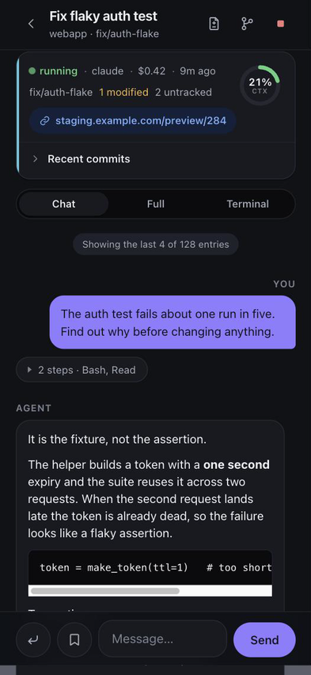

Remote For Xirp
See and steer your coding agents from your phone.
A mobile web app for Xirp, the agent desktop app from Spotify. The sessions running on your Mac — Claude Code, Codex, Gemini, or whatever else Xirp is driving — can be watched and answered from an iPhone or Android without going back to the desk. It runs on your own network, not through anyone's cloud.
What it looks like
Screenshots from a phone. The machine, project and session names are made up; the layout, spacing and colours are the real thing.



Install
curl -fsSL https://raw.githubusercontent.com/AboveColin/remote-for-xirp/main/install.sh | sh
That drops a universal binary into ~/.local/bin and stops. Nothing starts
listening because you piped a script into a shell — starting it is one explicit
command, which prints a QR code to scan with your phone:
xirp-remote interfaces # which address can a phone reach?
xirp-remote install --generate-key # start it, and print a QR codeWhat it does
Machines, then projects, then sessions
Several machines running Xirp, each with its projects and their sessions.
Chat, transcript, or the real tmux pane
The pane is the actual one, so slash commands, model pickers and permission prompts work without this app knowing they exist.
Review the diff
What a session changed, uncommitted and against its base branch, with the file diff and a link to the branch's pull request.
Notifications
Web Push with the app closed: when an agent finishes a turn, when a session ends or fails, and when one wants an answer. The first of those is the status Xirp sets only when nobody is at the desk.
Saved prompts
The prompts you keep in Xirp on the desktop, one tap away. Tapping one fills the composer and stops there, so sending stays deliberate.
Start, fork, hand over
Start a session with a project, agent and model. Fork one that went the wrong way, or hand it to a different agent.
Pair by QR
The access key travels in the URL fragment, so it never reaches a server log, and the page clears it from the address bar.
Light and dark
Follows the phone, with an override in Settings. The terminal stays dark in both: the agent chose its ANSI colours for a dark background.
What you need
- macOS, and not incidentally — the daemon's token exists only in the Xirp app's process environment, which only the same user can read.
- Xirp installed and running. When the app is quit there is nothing to control.
- A phone on the same network, or reaching the Mac over a VPN.
- Nothing else. One Go binary, no Node, no database.
What it deliberately will not do
It reaches 36 of the daemon's 223 message types. No git writes, no terminal attach, no session deletion, no settings changes. Remote approval of permission prompts is absent because the daemon holds a request open for about half a second before falling through to the agent's own dialog — no polling client can catch that, and pretending otherwise would be worse than leaving it out.
Questions
Does it work on Windows or Linux?
No. The host has to be macOS, because the Xirp daemon's access token exists only in the desktop app's process environment, which only the same user on the same machine can read.
Does my session data go through a cloud service?
No. The binary runs on your own Mac and serves the app over your own network. There is no account and no third-party relay. Web Push notifications are the one exception: their payloads are end-to-end encrypted per RFC 8291 before they reach the browser vendor's push service.
Can I approve permission prompts from my phone?
No, and it is left out on purpose. The daemon holds a permission request open for about half a second before falling through to the agent's own dialog, which is too short for any polling client to catch. Use the real tmux pane view, where the agent's own prompt appears and can be answered.
Do slash commands work?
Yes, in the terminal view. It shows the session's actual tmux pane, so slash commands, model pickers and any other interactive prompt work without this app needing to know they exist.
Does installing it start a server on my machine?
No. The installer places a binary and stops. Starting the service is a separate
explicit command, xirp-remote install, which also prints the QR code
for pairing.
Is this made by Spotify or by the Xirp developers?
No. Xirp is a Spotify product; this is an unaffiliated third-party app that talks to the Xirp daemon's local API on your own machine. It is not made, endorsed or supported by Spotify, and it is MIT licensed.
What is Xirp?
Xirp is a desktop app from Spotify for running coding agents — Claude Code, Codex, Gemini and others — in parallel git worktrees on macOS. It exposes a local WebSocket API on the machine it runs on, which is what this app talks to. This does not replace it: Xirp has to be installed and running.